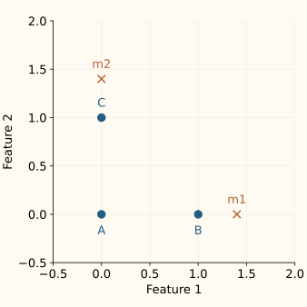
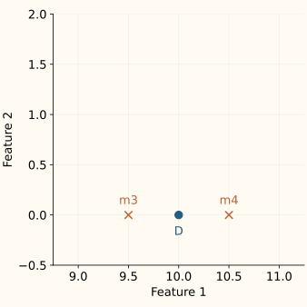

ADASYN
ADASYN allocates more synthetic rows to minority examples surrounded by the other class. It then generates those rows by interpolating toward minority neighbors, using the movement introduced in SMOTE.
The new idea is the allocation rule: where should the extra training rows come from? We will follow four minority examples through neighbor counting, budget allocation and generation. This chapter describes imbalanced-learn’s ADASYN implementation; code and rounding details are optional.
First count neighbors from both classes
Imagine 14 training rows with two numeric features: ten majority rows labeled 0, and four minority rows labeled 1. Name the minority examples A, B, C and D. For each one, find the two closest other training rows using Euclidean distance. The seed itself is excluded.


| Seed | Two nearest other rows | Majority fraction |
|---|---|---|
| A | B, C | 0 / 2 = 0 |
| B | m1, A | 1 / 2 = 0.5 |
| C | m2, A | 1 / 2 = 0.5 |
| D | m3, m4 | 2 / 2 = 1 |
Call the majority count for seed $i$ $d_i$, and the number of neighbors $k$. Its local majority fraction, $r_i$, is simply
D gets the largest score because all its nearby rows have the other label. A gets zero because its nearest neighbors share its label. This is a neighborhood heuristic for difficulty: it does not measure a trained classifier’s loss, and a score of 1 does not prove that D’s label is wrong.
Turn those fractions into shares of a budget
Suppose we request six additional minority rows, intending to raise their count from four to ten. The local fractions add up to 2. Dividing each by 2 gives budget shares of 0%, 25%, 25% and 50% for A, B, C and D.
Write $G$ for the requested number of additional rows. For each seed, $w_i$ is its budget share and $u_i$ is its quota before rounding. The sum below runs over all minority seeds:
At G = 6, the quotas are 0, 1.5, 1.5 and 3. D receives twice B’s quota. A produces no synthetic rows as a seed, but the original A row remains and can still serve as another seed’s interpolation neighbor.
| Seed | Share | Quota | Whole rows |
|---|---|---|---|
| A | 0% | 0.00 | 0 |
| B | 25% | 1.50 | 2 |
| C | 25% | 1.50 | 2 |
| D | 50% | 3.00 | 3 |
Why can a requested count of 10 produce 11?
The implementation applies numpy.rint to each quota independently. It rounds to the nearest integer, choosing the even integer at an exact halfway point: 0.5 becomes 0; 1.5 becomes 2. Thus our quotas become [0, 2, 2, 3], totaling seven new rows. No later adjustment forces the total back to six.
This is an implementation detail, not a new learning principle. Check actual output counts when comparing runs. A dictionary such as sampling_strategy={1: 10} requests a final count of ten for class 1; the ADASYN allocation may return a nearby count.
A different neighbor search chooses the generation direction
Once the quotas are allocated, the implementation fits its neighbor search on the minority rows only. For each seed’s assigned rows, it randomly selects one of that seed’s k minority neighbors and moves a shared random fraction along the segment. The synthetic label is 1.
For D, the first search finds majority rows m3 and m4, each only 0.5 away. The second search finds minority rows B and A, at distances 9 and 10. Its synthetic rows can therefore stretch across long segments. “Many opposite-class neighbors” does not imply “good nearby minority parents.”
This is the assumption to inspect: extra rows may emphasize a useful class boundary, but they may also amplify an isolated or mislabeled example. Neither the neighbor count nor the assigned label establishes the true class of every interpolated point. The SMOTE validity discussion covers feature constraints and categorical alternatives.
Run the complete example
The code uses floating-point features, k = 2 and a fixed random seed. It prints the neighbor fractions, rounded allocations and actual class counts. The new coordinates vary with the random seed; these quotas do not.
Python: audit the allocation, then call ADASYN
import numpy as np
from sklearn.neighbors import NearestNeighbors
from imblearn.over_sampling import ADASYN
minority = np.array([[0., 0.], [1., 0.], [0., 1.], [10., 0.]])
majority = np.array([[1.4, 0.], [0., 1.4], [9.5, 0.], [10.5, 0.],
[5., 3.], [6., 3.], [7., 3.], [8., 3.],
[11., 3.], [12., 3.]])
X = np.vstack([majority, minority])
y = np.array([0] * 10 + [1] * 4)
k, requested_final = 2, 10
budget = requested_final - len(minority)
# Request k+1, then remove the query row itself.
# This small dataset has distinct coordinates.
nn = NearestNeighbors(n_neighbors=k+1).fit(X)
neighbors = nn.kneighbors(minority, return_distance=False)[:, 1:]
r = (y[neighbors] != 1).mean(axis=1)
allocation = np.rint((r / r.sum()) * budget).astype(int)
sampler = ADASYN(sampling_strategy={1: requested_final},
n_neighbors=k, random_state=7)
X_resampled, y_resampled = sampler.fit_resample(X, y)
print(r.tolist())
print(allocation.tolist())
print(np.bincount(y_resampled).tolist())
[0.0, 0.5, 0.5, 1.0]
[0, 2, 2, 3]
[10, 11]In a model-selection workflow, put ADASYN inside the training pipeline, after any fitted imputation and scaling. The SMOTE pipeline example shows the placement; replace its sampler with ADASYN(n_neighbors=2, random_state=7). Evaluate on original validation rows, preserving the population you need to serve.
Recognize when the allocation is undefined or unhelpful
- Every local fraction is zero. There is no nonzero score to normalize. The implementation raises
RuntimeError; it does not automatically switch to equal allocation. Consider whether ordinary oversampling is useful at all. - Every quota rounds to zero. The request is too small for this allocation and rounding combination. The implementation raises
ValueError, as the slider shows. - Too few minority rows. Excluding the seed requires k smaller than that class’s row count. The default k = 5 needs at least six rows in each class being generated, in every training fold.
- Unhelpful distances or labels. Feature units, duplicates, isolated points and label errors influence both searches. Inspect them before increasing the sampling budget.
For multiclass data, the library scores each selected class against all other labels, then generates within that class. This extends the same two-search idea; “other labels” replaces “majority” in the count.
Optional C++: reproduce the budget allocation
This focused helper starts with the local fractions already computed. It reproduces the independent nearest-even rounding step for a modest integer budget. Neighbor search and interpolation are separate tasks, covered in the SMOTE implementation.
Compile the allocation helper
#include <cmath>
#include <iostream>
#include <numeric>
#include <stdexcept>
#include <vector>
int nearest_even(double value) {
const double low=std::floor(value), part=value-low;
return static_cast<int>(low +
(part>0.5 || (part==0.5 && std::fmod(low,2.0)==1.0)));
}
std::vector<int> allocate(const std::vector<double>& fractions, int budget) {
if (budget<=0) throw std::invalid_argument("positive budget required");
double sum=0;
for (double r:fractions) {
if (!std::isfinite(r) || r<0 || r>1)
throw std::invalid_argument("fractions must be in [0,1]");
sum+=r;
}
if (!(sum>0)) throw std::domain_error("all neighbor scores are zero");
std::vector<int> counts;
bool any=false;
for (double r:fractions) {
int n=nearest_even((r/sum)*budget);
counts.push_back(n);
any=any || n>0;
}
if (!any) throw std::domain_error("all rounded counts are zero");
return counts;
}
int main() {
const auto counts=allocate({0,0.5,0.5,1},6);
for (int n:counts) std::cout << n << " ";
std::cout << "\ntotal="
<< std::accumulate(counts.begin(),counts.end(),0LL) << "\n";
}
0 2 2 3
total=7ADASYN supplies a candidate training distribution, not evidence of improved performance. Compare it with no resampling, class weights and basic SMOTE under the same evaluation protocol. Choose from validation results and operational needs, rather than from how balanced the resulting row counts look.
References and further reading
- He et al.: ADASYN (IJCNN 2008) — Section II introduces neighborhood fractions and adaptive generation quotas.
- Imbalanced-learn: ADASYN — sampling targets, neighborhood parameters and multiclass support; example checked with version 0.14.2.
- Imbalanced-learn: ADASYN generation source — the two neighbor fits, independent quota rounding and error cases.
- NumPy: rint — nearest-integer rounding, with ties to the nearest even integer.
- Imbalanced-learn: ill-posed synthetic examples — why concentrating generation near difficult examples can be counterproductive.
- Imbalanced-learn: resampling leakage — fit resampling only within training and preserve the evaluation population.